Ryomen Sukuna
İkonik Fotoğrafları
Sukuna'nın Animedeki Karaleri. (İtorori Yuuji'nin Bedenindeki Hali)


Sukuna'nın Real Formu

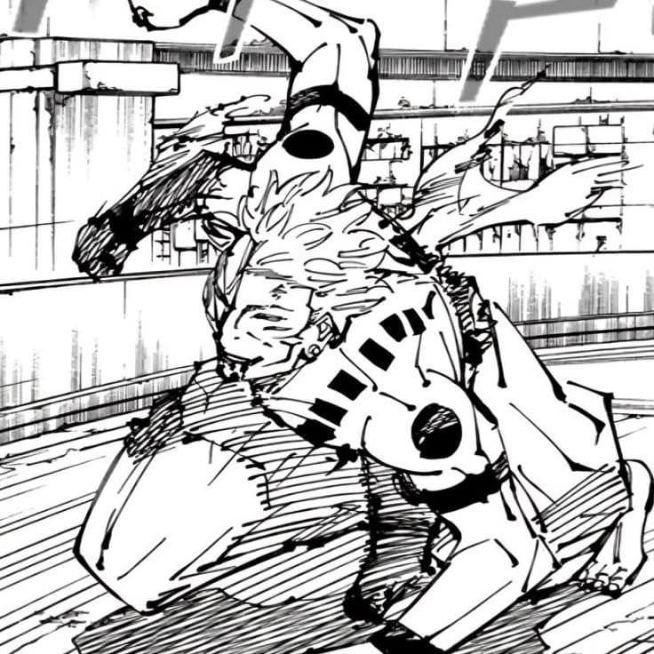
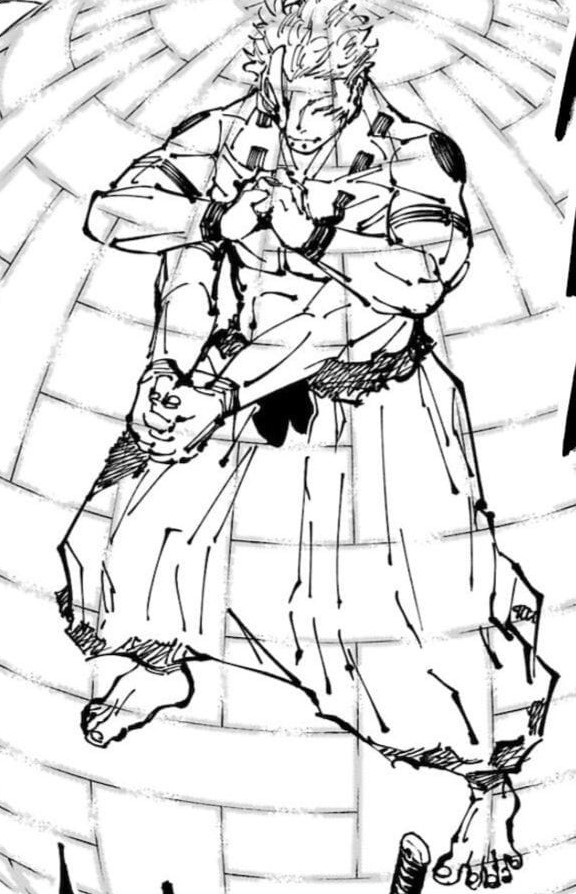
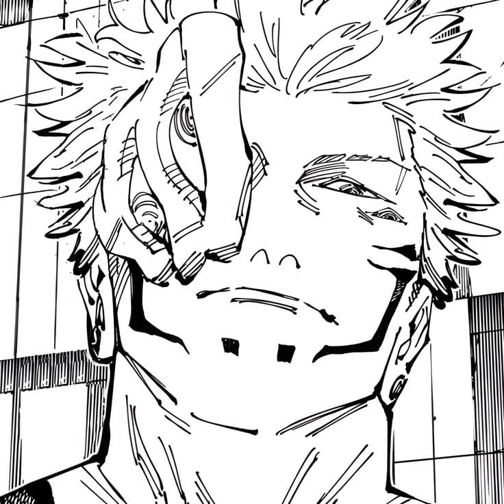
Sukuna'nın Mangadaki Kareleri (İtorori Yuuji'nin Bedenindeki Hali)
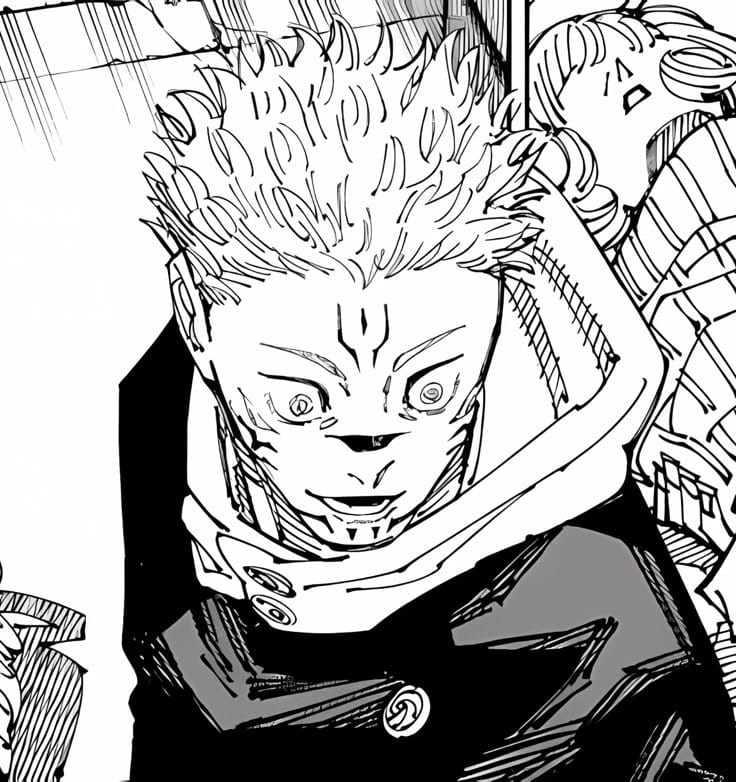
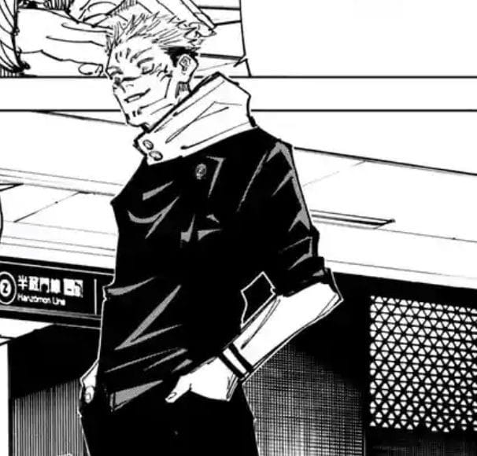
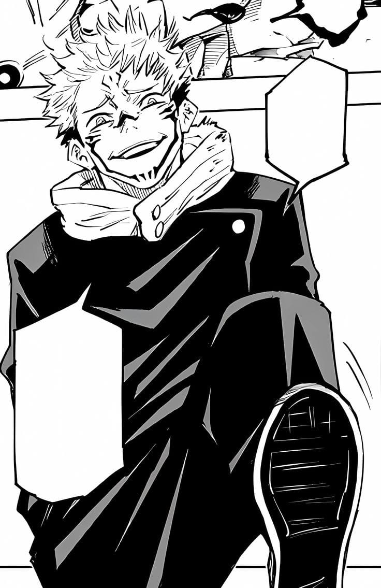
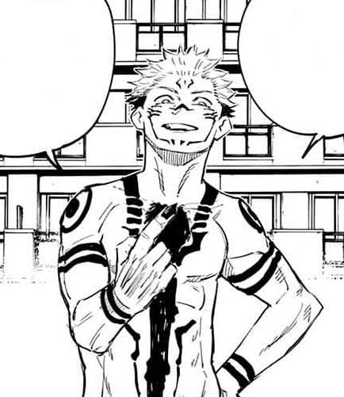
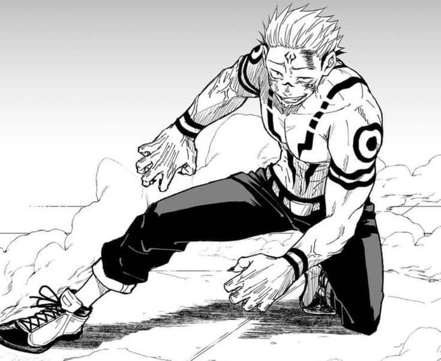
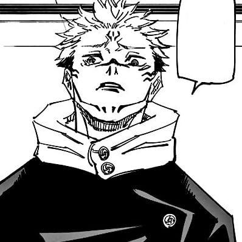
Sukuna'nın Mangadaki Kareleri (Fushiguro Megumi'nin Bedenindeki Hali)
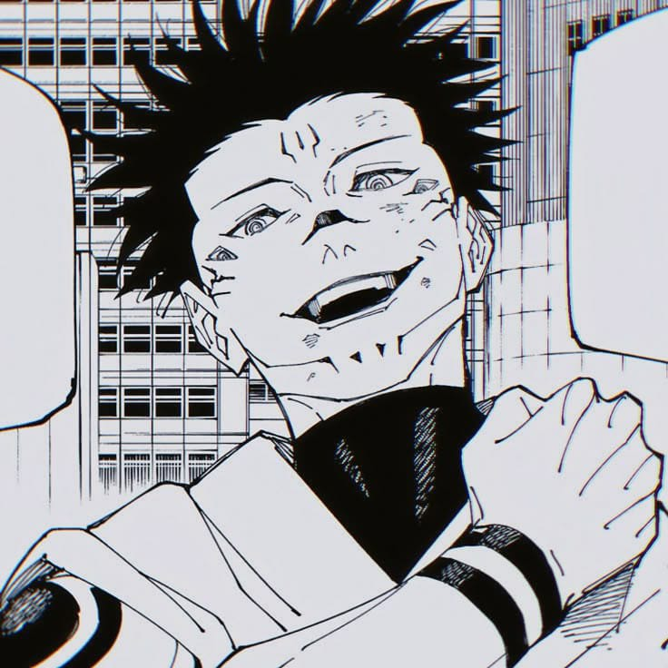
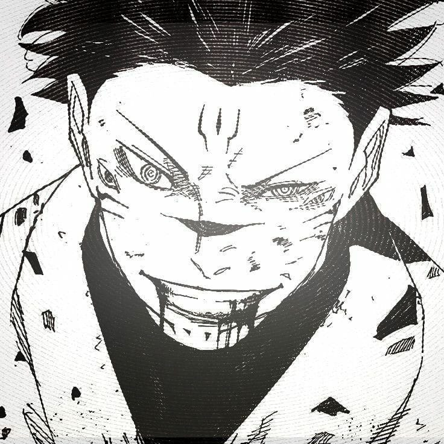
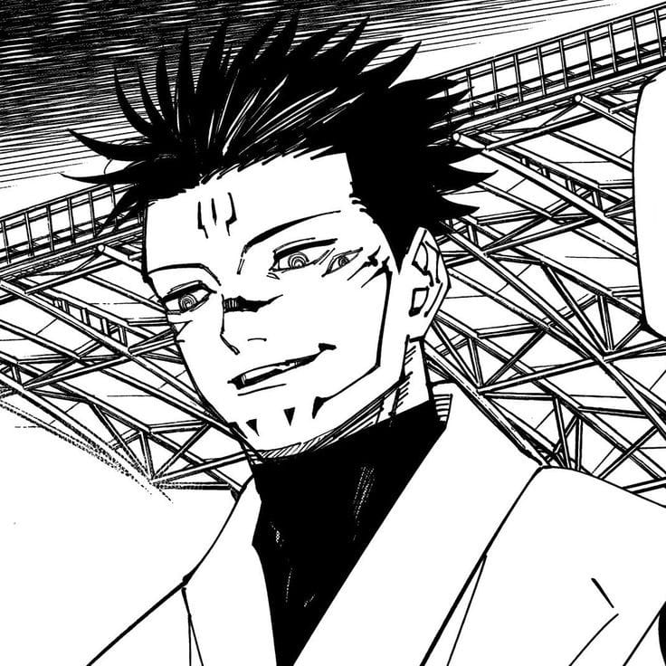
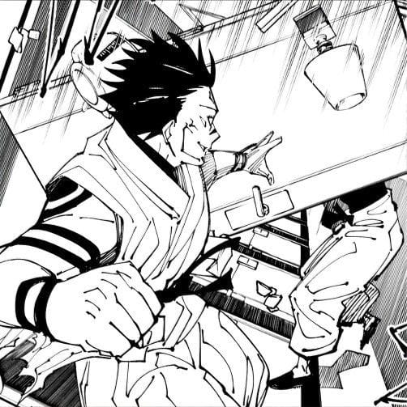
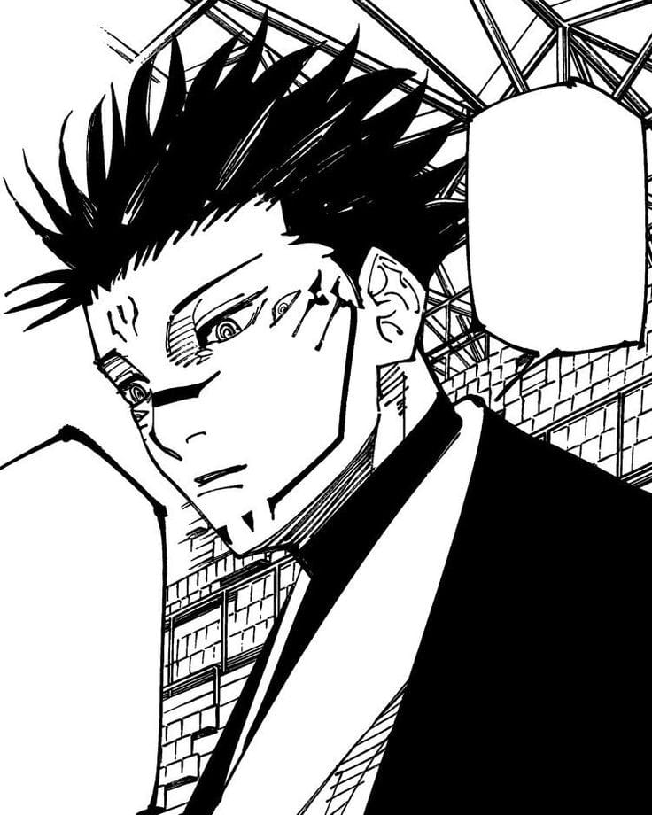
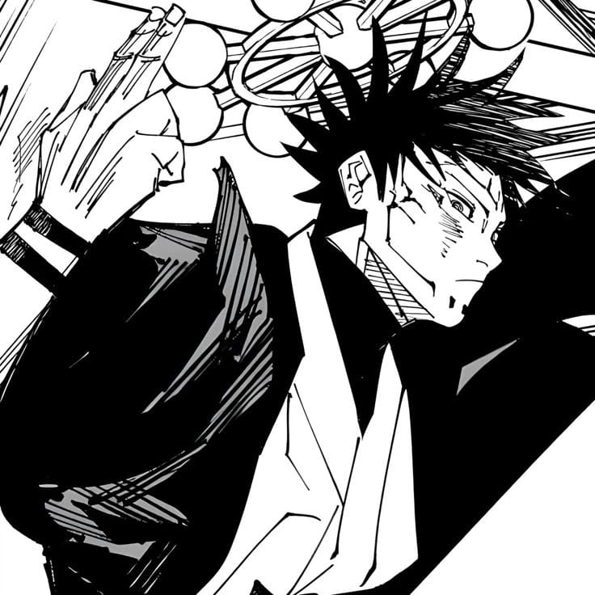
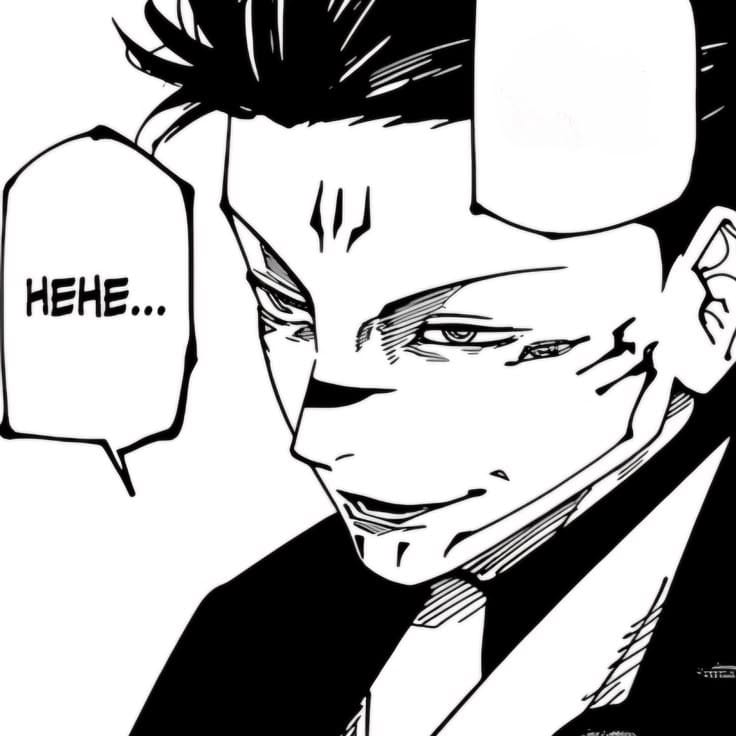
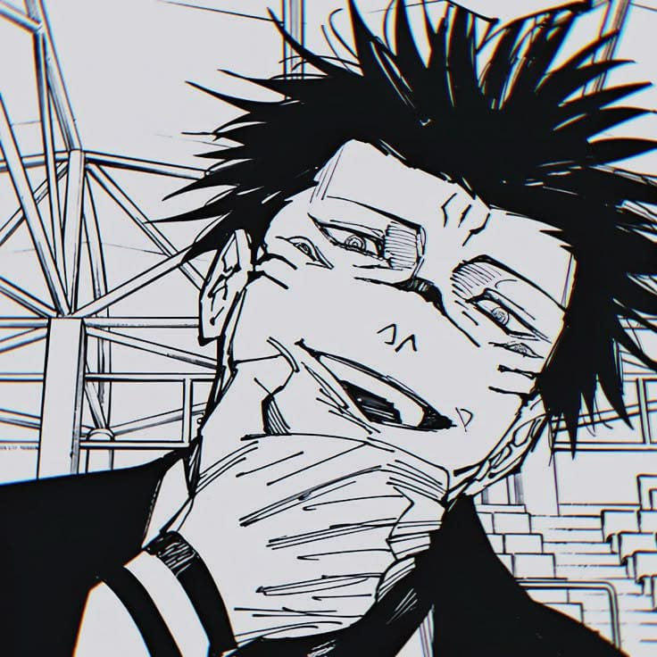
Sukuna'nın Mangadaki 1.Cilt Kapak Fotoğrafı ve Gojo ile olan savaşından Renklendirilmiş Kareleri
(Fushiguro Megumi'nin Bedenindeki Hali)